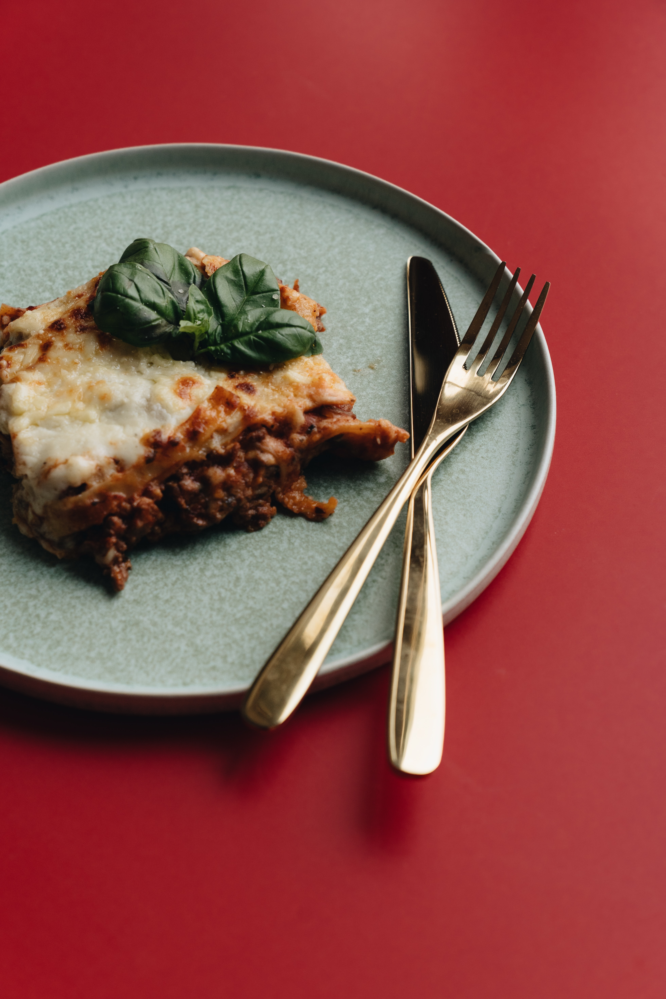
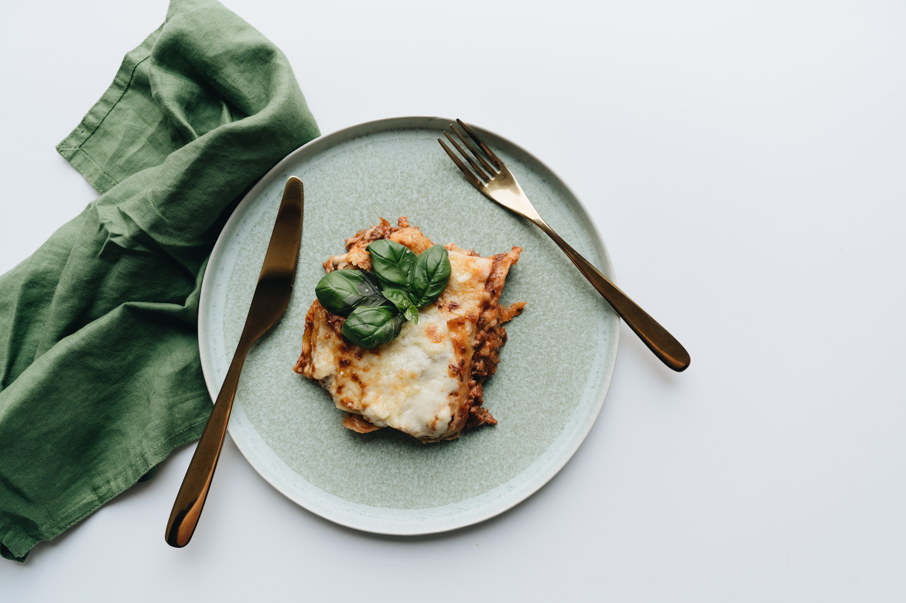
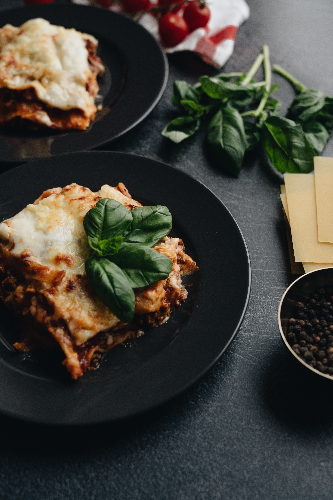

<h1>Odin Recipes</h1>

<body>
    
    <a href="recipes/lasagne.html">Homemade Lasagne</a>


</body>


    
<body>





<ul>
    <li><a href="recipes/yourrecipe.html">Homemade Lasagne</a></li>
    <li><a href="recipes/yourrecipe.html">Ingredients</a></li>
    <li><a href="recipes/yourrecipe.html">What we will need</a></li>
  </ul>


</body>